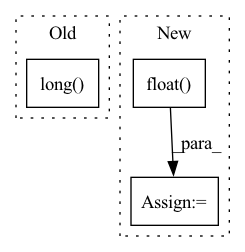

Pattern ID :35353

Before Change
)
if cfg["USE_AMP"] == True and cfg["OPT_LEVEL"] == "O1":
final_target_logit = final_target_logit.half()
cos_theta.scatter_(1, label.view(-1, 1).long(), final_target_logit)
output = cos_theta * self.s
return output
After Change
is_half = cos_theta.dtype == torch.float16
cos_theta_m = torch.where(
cos_theta > self.min_cos_theta, cos_theta_m, cos_theta.float() - self.m_am,
)
if is_half:
cos_theta_m = cos_theta_m.half()
index = torch.zeros_like(cos_theta)
index.scatter_(1, label.data.view(-1, 1), 1)
index = index.byte().bool()
output = cos_theta * 1.0
output[index] = cos_theta_m[index]
output *= self.s
return output
In pattern: SUPERPATTERN
Frequency: 3
Non-data size: 3
Instances
Fragment ID: 100425999
Project Name: cavalleria/cavaface
Commit Name: 98a21048f5dce435a6639a288dafc4c6be61be05
Time: 2021-08-25
Author: 605370459@qq.com
File Name: head/metrics.py
M Class Name: ArcFace
N Class Name: ArcFace
M Method Name: forward(3)
N Method Name: forward(3)
M Parent Class: nn.Module
N Parent Class: nn.Module
M File Name: head/metrics.py
N File Name: head/metrics.py
M Start Line: 81
M End Line: 103
N Start Line: 67
N End Line: 86
'>
Before Change
pos_discrete = pos_src.ceil().long()
pos_frac = pos_src - pos_src.floor()
else:
pos_discrete = pos_src.round().long()
pos_frac = torch.ones_like(pos_src)
pad = kernel_size // 2
// (2, 1, HW)
After Change
// The target coordinates do not require gradients
pos = torch.arange(sizes[0] * sizes[1], **dkwargs)
pos_i = (pos // sizes[1]).float()
pos_j = (pos % sizes[1]).float()
// Map the target coordinates to the source coordinates
// This implements the backward warping
pos_tar = torch.stack([pos_j, pos_i, torch.ones_like(pos_i)], dim=0)
pos_src = torch.matmul(m.inverse(), pos_tar)
pos_src = pos_src[:2] / pos_src[-1, :]
// Out of the image
pos_bound = pos_src.new_tensor([x.size(-1), x.size(-2)]) - 0.5
pos_bound.unsqueeze_(-1)
pos_in = torch.logical_and(pos_src.ge(-0.5), pos_src.lt(pos_bound))
pos_in = pos_in.all(0)
// Remove the outside region and compensate subpixel shift
sub = (k % 2) / 2
pos_src = pos_src[..., pos_in]
pos_src_sub = pos_src - sub
pos_discrete = pos_src_sub.ceil().long()
pos_frac = pos_src_sub - pos_src.floor()
pos_frac.unsqueeze_(1)
// (2, 1, HW)
'>
Fragment ID: 100425994
Project Name: thstkdgus35/bicubic_pytorch
Commit Name: eb261bd72c7d717dab243fa09c6be01c8cdce6cb
Time: 2020-07-26
Author: sonsang35@gmail.com
File Name: core_warp.py
M Class Name: AnonimousClass
N Class Name: AnonimousClass
M Method Name: warp_by_size(6)
N Method Name: warp_by_size(6)
M Parent Class:
N Parent Class:
M File Name: core_warp.py
N File Name: core_warp.py
M Start Line: 38
M End Line: 104
N Start Line: 38
N End Line: 92
'>
Before Change
input_ids, targets = pandora_embeddings(datafile, tokenizer, token_length)
input_ids = torch.from_numpy(np.array(input_ids)).long().to(DEVICE)
targets = torch.from_numpy(np.array(targets)).long().to(DEVICE)
self.input_ids = input_ids
self.targets = targets
After Change
input_ids = torch.from_numpy(np.array(input_ids)).long().to(DEVICE)
targets = torch.from_numpy(np.array(targets))
if dataset_type == "pandora":
targets = targets.float().to(DEVICE)
else:
targets = targets.long().to(DEVICE)
'>
Fragment ID: 100426001
Project Name: yashsmehta/personality-prediction
Commit Name: 53462ed81bba90c9deeb1ccb4ee3603d2c082c28
Time: 2020-06-07
Author: amirmohammadkz@gmail.com
File Name: data_utils.py
M Class Name: MyMapDataset
N Class Name: MyMapDataset
M Method Name: __init__(6)
N Method Name: __init__(6)
M Parent Class: Dataset
N Parent Class: Dataset
M File Name: data_utils.py
N File Name: data_utils.py
M Start Line: 194
M End Line: 194
N Start Line: 194
N End Line: 200